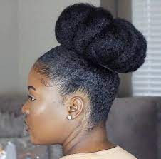
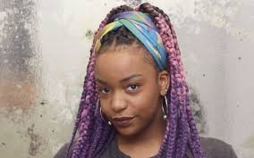
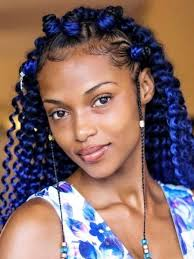
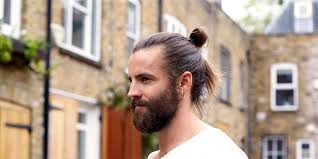
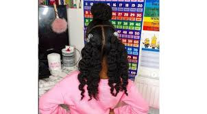
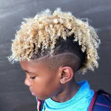

Is all about new styles of hair in Africa.
Their are many types of hairstyles in Africa.
One can use natural hair to be his or her fashion.
I love different types of hairstyles and would like to introduce in our community.
Poverty
Most people in our community do not have money to purchase new hair fashion.
They are not even aware about hairs.
Some shave their hairs because they don't have enough money to mantain their hairstyle.
Lack of education skills
Most people have no idea about new hairstyle fashion.
Others are not creative on plaiting hairs.
I want to start a training school in the community to help people who are willing to do hair dressing
and also to help them learn more about hair dressing and learn new types of hairstyle.
Finance
I will employ people in my boutique so that they can earn.
I will aquire more money so that i can buy new hairstyle.
I will need more money to transport hair to different places.
Types of hairstyles
1.Jumbo topknot

It's a type of hair which is done by smoothing your roots and babyhairs down with a baby hair brush and edge style before you create your large luscious
2.Ponytail

Brush your hair down with a styling gel and secure your ponytail with your favorite medium sized scrunchie
3.Bantu knots


It's just a simple style.Just section your hair up and roll each part into a tight mini bun.Smooth down the baby hairs and you're ready to go within minutes
4.Twist out


dampen your hair and apply a styling products before you twist individual two strand section.When it dries you unruvel the twist and real